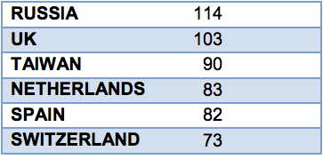

Net sales for the Brazilian chemical industry in 2013, taking into account all segments, were US$ 162.3 billion, a 10.7% increase over the prior year. Brazil is the world’s sixth-largest chemical industry, surpassed only by (in order) China, USA, Japan, Germany and South Korea; and is forecast to surpass South Korea by 2020. Rounding out the top 15 are India, France, Italy, Russia, UK, Taiwan, Netherlands, Spain, and Switzerland.
According to the Brazilian Chemical Industry Association (ABIQUIM), net sales for Brazil’s chemical industry have increased 292% over the past 19 years, growing from US$41.4 to US$162.3 billion. Imports continued a year-over-year increase, reaching US$46.4 billion. However, Brazil’s chemical industry trade deficit continues, with exports from the country reaching only US$14.2 billion in 2013. Countries from Mercosul and North America were the main destinations for Brazilian chemical exports in 2011: Argentina, Paraguay and Uruguay imported US$3.2 billion, while the United States, Canada and Mexico bought US$3 billion.
Brazil imported a volume of 37.5 million tons of chemical products in 2013, comprised of the following:
- Potassium Chloride
- Insecticides
- Urea (with nitrogen content >45% by weight)
- Ammonium Dihydrogenorthophosphate
- Drugs (blood fraction)
- Drugs with heterocyclic composts
- Human antibodies
- Fungicides
- Fertilizers / Fertilizers with nitrogen and phosphorus
- Glyphosate including the monoisopropylamine salt
BRAZIL IS THE 6TH LARGEST CHEMICAL INDUSTRY IN THE WORLD


The country has 2,500 chemical companies operating, comprising 2.8% of the Brazilian GDP. Brazil’s chemical industry is responsible for 390,000 direct jobs and more than two million indirect jobs.